La Agricultura Orgánica en Guatemala
Conozca cómo Flor de Tierra está revolucionando la agricultura en Guatemala, ofreciendo productos orgánicos de alta calidad y con impacto positivo en el medio ambiente.

Productos Orgánicos Reconocidos
Nos sentimos honrados de ser reconocidos por FIDA como los principales innovadores entre los jóvenes rurales en conservación en América Latina y el Caribe.

Impactando Vidas y Comunidades
Estamos orgullosos de nuestro compromiso de ofrecer productos y servicios agrícolas orgánicos, de alta calidad y respetuosos con el medio ambiente, no solo fomentamos tierras más saludables sino que también contribuimos a las comunidades locales.

Nestra Misión
Flor de Tierra
Flor de Tierra es una empresa con fines sociales, que vincula el conocimiento científico y el conocimiento maya en diversas acciones de lucha contra el cambio climático. Buscamos mejorar la productividad, rentabilidad y condiciones de salud de los ecosistemas, sistemas productivos y de los agricultores. Vendemos y enseñamos a elaborar nuestros productos, con la finalidad de transformar la agricultura convencional en una agricultura de amor. Y, nos vinculamos a todo ecosistema que nos permita colaborar para el buen vivir del campo.
Servicios de Agricultura Orgánica
Conozca nuestros servicios y cómo podemos mejorar su producción de cultivos.

Implementos de calidad
Utilizamos los mejores y más modernos implementos para garantizar una agricultura orgánica de calidad.

Técnicas y métodos naturales
Nuestra filosofía es trabajar en armonía con la naturaleza, utilizando métodos y técnicas naturales para obtener productos orgánicos.

Fertilizantes orgánicos
Utilizamos fertilizantes naturales y compost para nutrir nuestros cultivos y obtener productos más saludables y nutritivos.
Nuestros Productos
Microorganismos de montaña (MM)
Devuelve la fortaleza al suelo y apura la degradación de residuos sólidos orgánico.
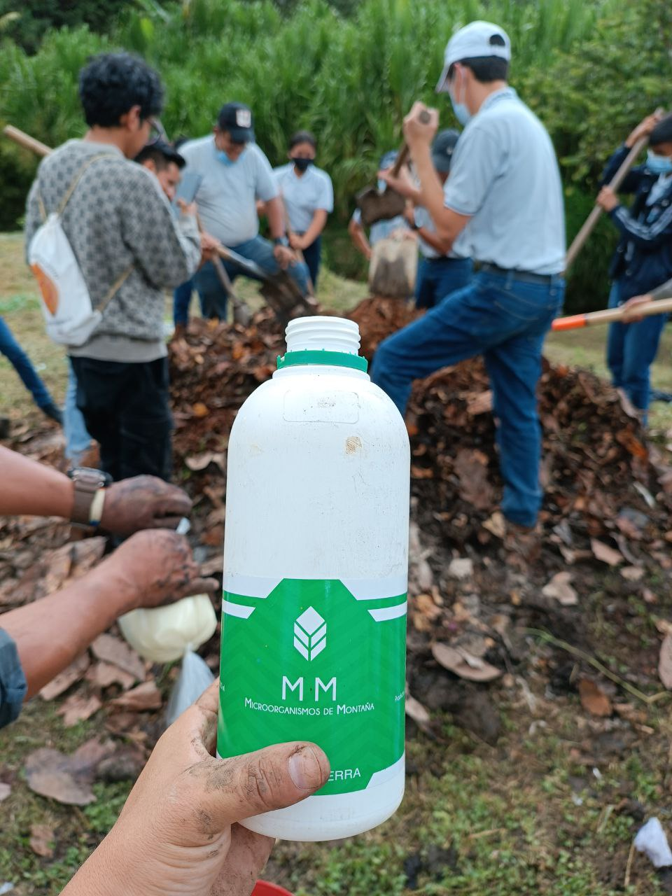Bokashi
El mejor fertilizante orgánico de la región con todos los nutrientes necesarios para mejorar la productividad agrícola, respaldado por el conocimiento maya y años de investigación científica.
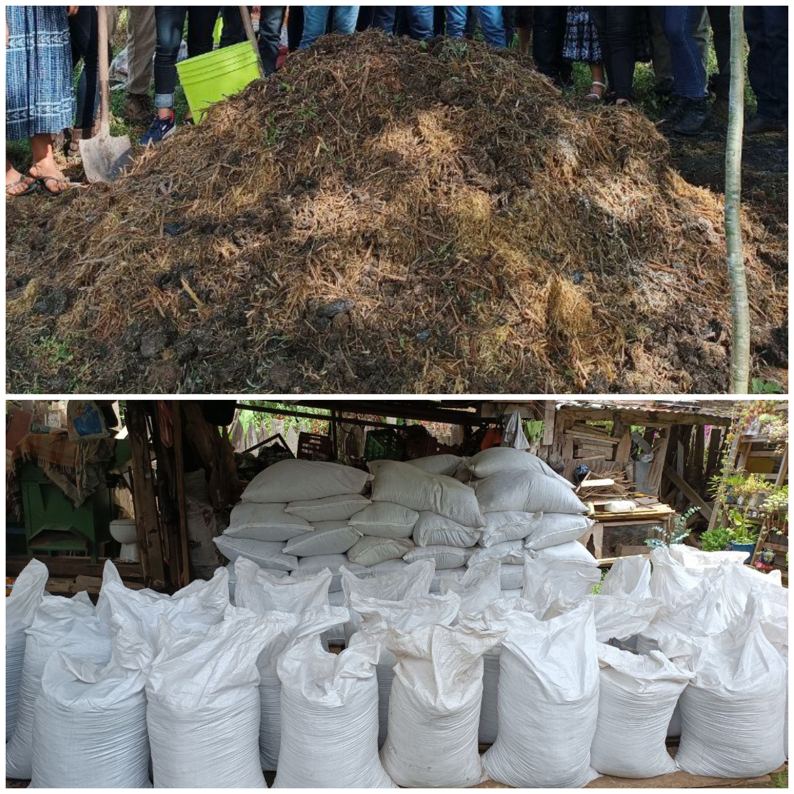Bokashi Jardín
El mejor fertilizante orgánico para agricultura urbana.
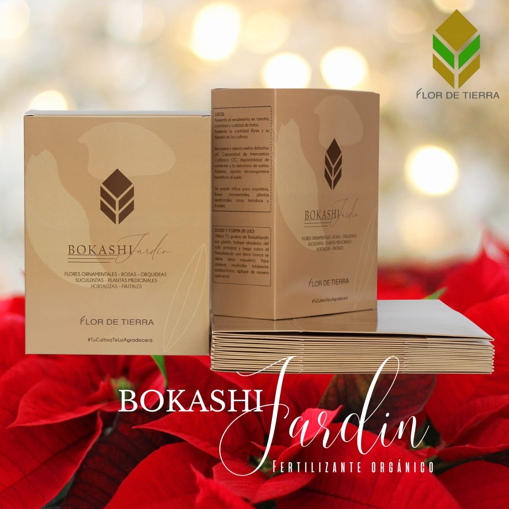Ácidos húmicos
Mejoran la estructura del suelo y la disponibilidad de micronutrientes.
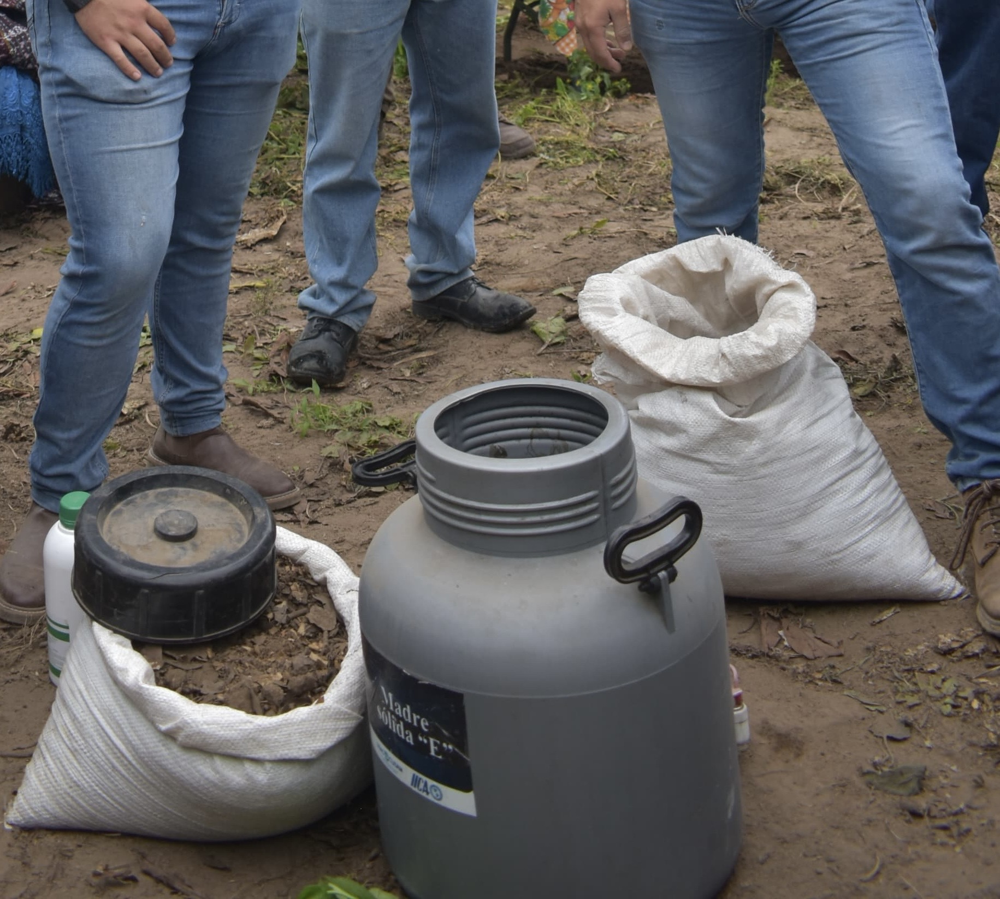ProbA
Mejorador del sistema digestivo animal. Mejora en calidad y cantidad la producción animal y reduce el riesgo a diversas enfermedades.
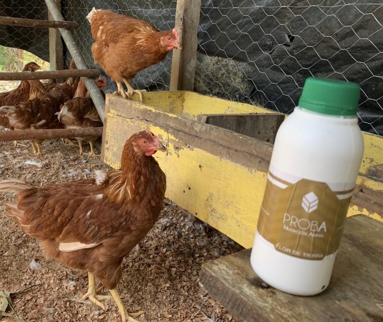Otros
Gallinas y frutales.
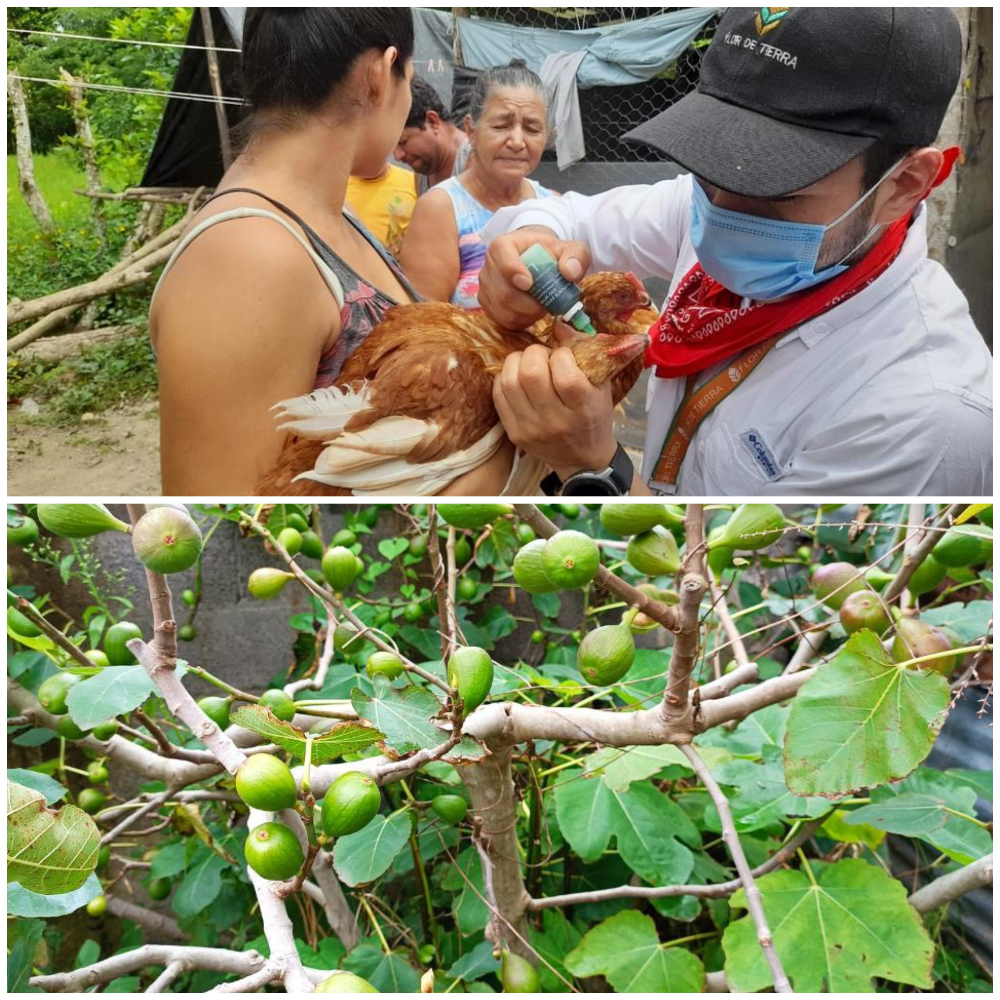Nuestros Servicios
Talleres y cursos
Agricultura maya sostenible, forestería comunitaria y bioinsumos.
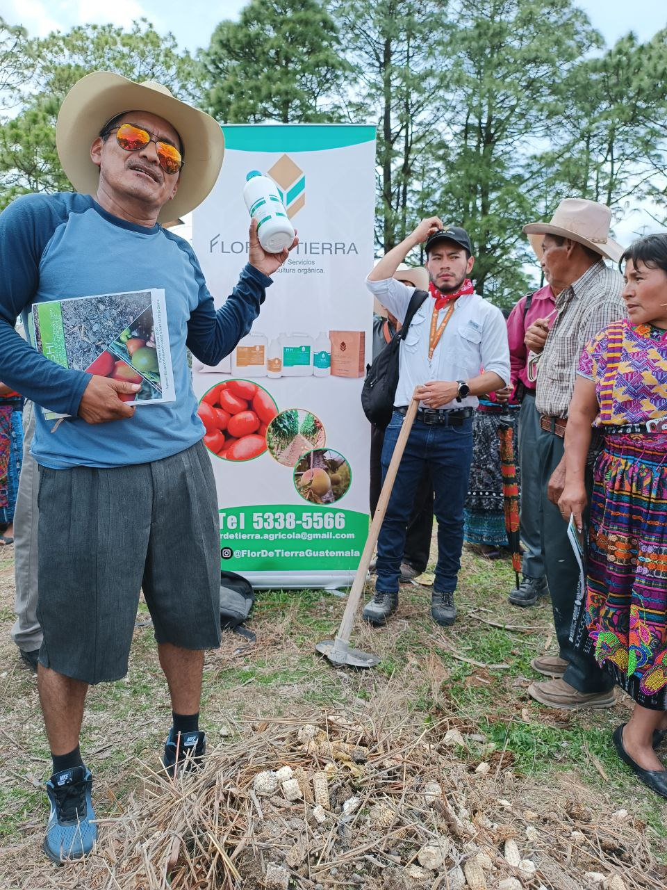Montaje de biofábricas
Diseñamos y construimos biofábricas sostenibles para mejorar la productividad de su cosecha.
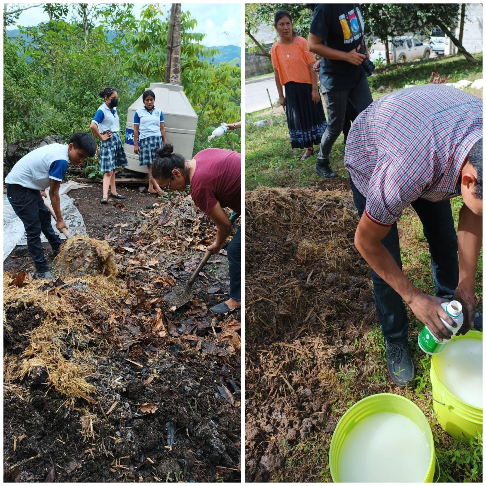Asesorías silvopastoriles
Nutrición de ganado vacuno y bovino; fertilización y establecimiento de pastos y forrajes adecuados; y determinación de especies forestales adecuadas para sistemas silvopastoriles.
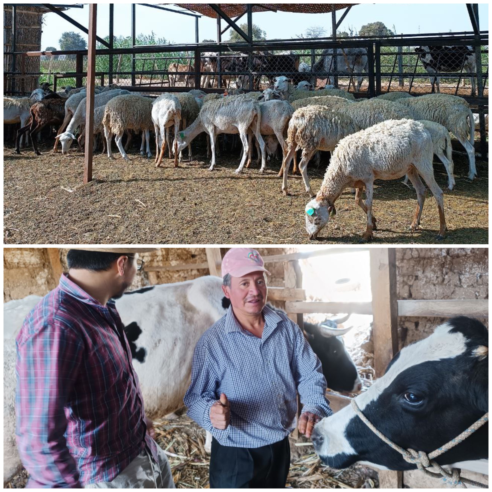Restauración de paisajes
Métodos de restauración, estrategias de manejo y conservación de paisajes, métodos de gobernanza de paisajes, restauración post-incendios, costo beneficio de la restauración de paisajes.

Estudios relacionados al cambio climático y carbono
Reducción de incendios forestales, conectividad biológica, medición de biodiversidad, medición de captura de carbono.
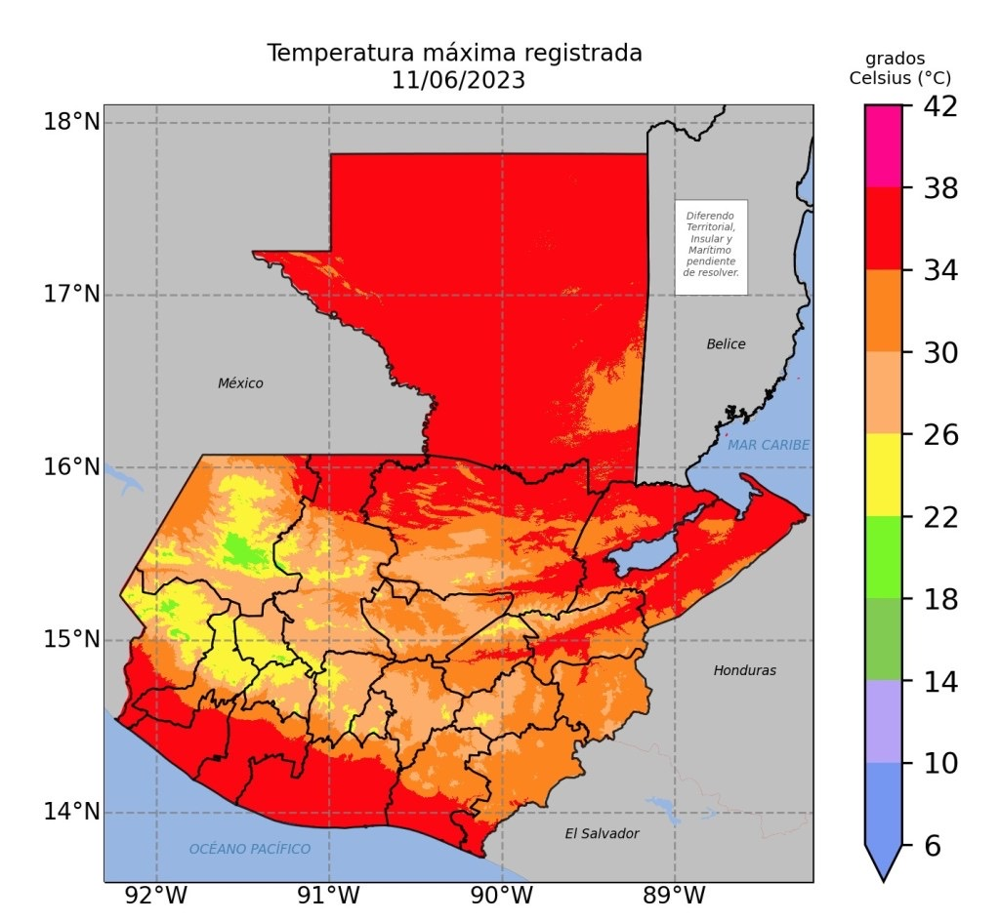Gestión de residuos sólidos
Diagnósticos situacionales, caracterización de residuos sólidos, métodos de degradación de residuos sólidos orgánicos, mejoramiento del compostaje de residuos sólidos orgánicos.
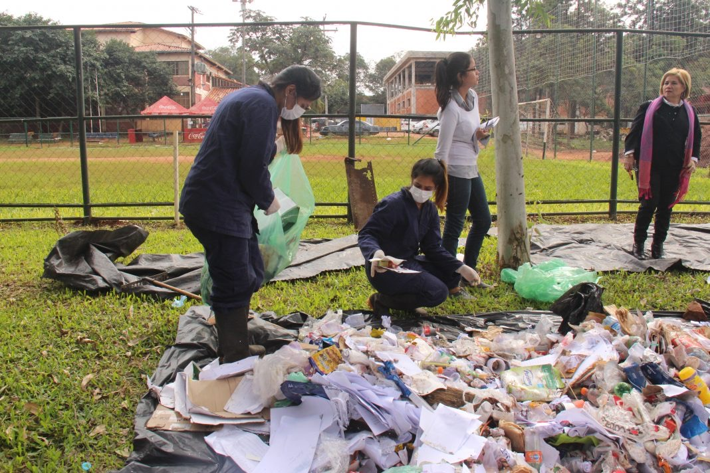Flor de Tierra es Orgánico
Ayudando a los agricultores: cultivando productos más saludables y sostenibles con Flor de Tierra
Con FlorDeTierra, los agricultores pueden obtener productos orgánicos de alta calidad sin químicos ni pesticidas. Esto no solo beneficia su salud, sino también la del ambiente y los consumidores que buscan alimentos más naturales.

Sea testigo del impacto transformador de la agricultura orgánica en las comunidades guatemaltecas
Nuestro compromiso con la sostenibilidad y la agricultura orgánica fomenta un impacto positivo, conectando la naturaleza con la vibrante vida guatemalteca. Únase a nosotros para ser testigo del poder transformador del cultivo orgánico.
Nuestras Colaboraciones
En Flor de Tierra, creemos en el poder de la colaboración. A través de asociaciones estratégicas con organizaciones en varios países, nuestro objetivo es crear una red global dedicada al avance de la agricultura orgánica. Nuestra misión compartida es mejorar la accesibilidad de los productos orgánicos, fomentar métodos agrícolas respetuosos con el medio ambiente y contribuir a un futuro más saludable y sostenible.
PERÚ
Taller sobre los principios de la agricultura orgánica, centrándose en las prácticas regenerativas, la salud del suelo y la resiliencia climática por Flor de Tierra.
MÉXICO
7° Encuentro Parlamentario de Cambio Climático en Ciudad de México. Dimos a conocer las acciones de Flor de Tierra en torno a los conocimientos ancestrales y la innovación a diputados senadores de todo el continente americano. ¡Somos la mejor opción en productos, asesorías y talleres agrícolas sostenibles!
ROMA
Participamos activamente en el prestigioso Foro Mundial sobre la Alimentación. Al participar en debates significativos, contribuímos con nuestros conocimientos al diálogo global sobre agricultura sostenible. Nuestra presencia en Roma ejemplifica nuestra dedicación para permanecer a la vanguardia de conversaciones cruciales que dan forma al futuro de la agricultura en todo el mundo.
PANAMÁ
Dimos a conocer a los ministros de agricultura (o delegados) de Belice 🇧🇿, Guatemala🇬🇹, El Salvador🇸🇻, Honduras 🇭🇳, Costa Rica🇨🇷, Panamá🇵🇦 y República Dominicana 🇩🇴 y representantes de CIAT, CAC, Trifinio, FAO, IICA, entre otros; nuestros productos, servicios y experiencia como alternativa ante la inminente crisis alimentaria y económica que se avecina por el aumento excesivo de precios de fertilizantes.
Descubra la esencia de Flor de Tierra capturando la belleza de la armonía orgánica y las prácticas agrícolas prósperas.
Preguntas frecuentes
Preguntas frecuentes sobre agricultura orgánica y cómo Flor de Tierra puede ayudar
 쯈ué es agricultura orgánica?
쯈ué es agricultura orgánica?
La agricultura orgánica es una forma de producción vegetal que utiliza métodos naturales y sostenibles para cultivar alimentos sin el uso de químicos o pesticidas.
쮺uáles son los beneficios de la agricultura orgánica?
La agricultura orgánica puede proteger el medio ambiente, mejorar la salud del suelo y producir alimentos más nutritivos y libres de químicos.
쮺칩mo puede Flor de Tierra ayudar a la agricultura local?
Flor de Tierra se dedica a la producción de fertilizantes y productos orgánicos y sostenibles en Guatemala, proporcionando a los agricultores locales una opción más saludable y amigable con el medio ambiente.
쮻칩nde puedo encontrar los productos de Flor de Tierra?
Los productos de Flor de Tierra están disponibles en tiendas locales y mercados, así como en nuestro sitio web.
Cotiza con Nosotros!
Pide una Cotización
Completa el siguiente formulario